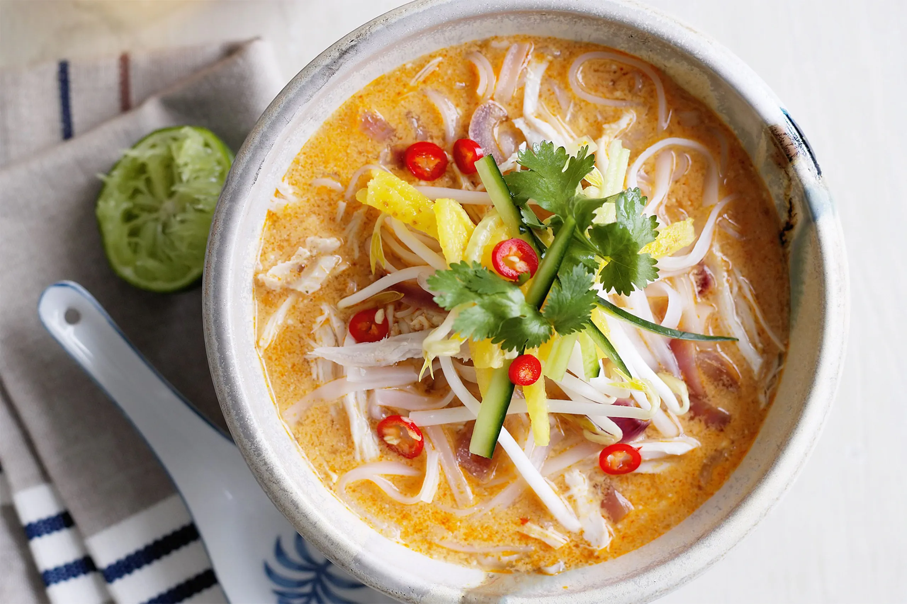

Laksa

Ingredients
- 200g dried rice vermicelli
- 1 tablespoon vegetable oil
- 200g chicken breast, cut into thin slices
- 200g prawns, peeled and deveined
- 2 litres chicken stock
- 400ml coconut milk
- 2 boiled eggs, halved
- 100g bean sprouts
- 3 tablespoons laksa paste
- Fresh coriander for garnish
- Lime wedges, to serve
Instructions
- Soak the vermicelli in warm water for about 10 minutes, then drain and set aside.
- Heat the oil in a large pot over medium heat. Add the laksa paste and cook, stirring, for 1 minute or until fragrant.
- Add the chicken stock and coconut milk to the pot. Bring to a boil.
- Add the chicken slices and prawns. Reduce the heat to a simmer, and cook for about 5-6 minutes, until the chicken and prawns are cooked through.
- Divide the vermicelli between 4 bowls. Top with the chicken, prawns, boiled eggs and bean sprouts. Ladle the hot soup over the top.
- Garnish with fresh coriander, and serve with lime wedges on the side.
Time
- Preparation Time: 20 minutes
- Cooking Time: 20 minutes
- Total Time: 40 minutes
Enjoy Cooking!